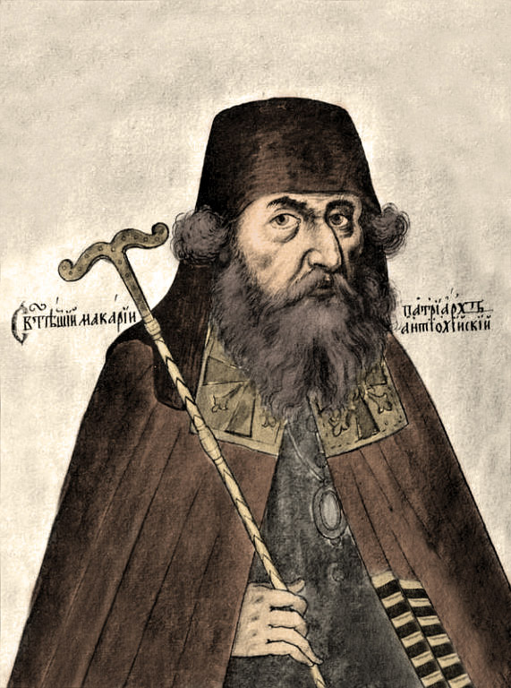

|
В середине XVII века некий арабский свя- |
|
Результатом этого описания стал поистине уникальный текст, который сегодня перед вами. В чём его уникальность? Дело в том, что большинство заметок о нашей стране принадлежит перу европейцев, для которых Русь являлась чаще всего синонимом вар- |
Как правило, приезжие с Запада являлись в Россию послами и были весьма скованы в своих наблюдениях. Московский двор смо- |
|
Иным было положение арабских путников Макария и Павла, коих Патриарх Никон при- |

нечто похожее в записках других иностран- |
|
Глядя на ослепительное разнообразие и богатство материала этого памятника, не- |
Ответ, скорее всего, кроется в самом тексте, а лучше сказать – в тех фактах, которые опровергают десятки уничижительных ми- |